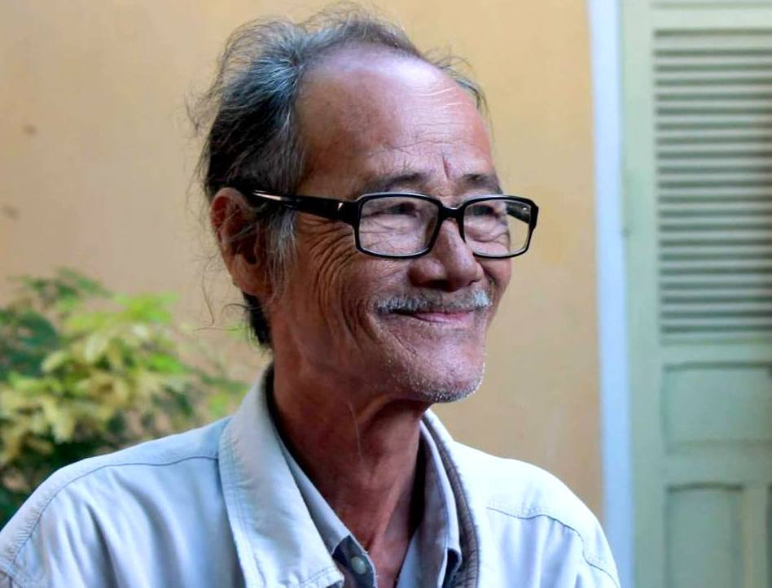

Lời Người Sưu Tầm

ài liệu mà tôi gởi tới độc giả sau đây là một tập hồi ký, dày 134 trang A4 đánh máy vi tính chữ nhỏ xuất hiện dưới hình thức samizdat được photocopy (thứ văn chương chuyền tay khá phong phú ở Việt Nam sau những năm “đổi mới”) cách đây có hơn 10 năm [1]. Tác giả của nó là Trần Vàng Sao (tên thật là Nguyễn Đính), một người làm thơ ở miền Nam, nhưng vào những năm 60 của thế kỷ trước, đã cùng với nhiều bạn bè đồng lứa đứng lên chống lại chế độ chính trị của miền Nam lúc đó bằng cách “đi lên núi” để cuối cùng, sau khi thoát khỏi bom đạn Mỹ, anh đã vướng phải một tai họa cực kỳ tệ hại.Cuốn hồi ký này kể lại cái tai họa đó khi từ chiến khu, anh được đưa ra miền Bắc trị bệnh: ở nơi đây, sau một thời gian quan sát, anh đã ghi lại những suy nghĩ của mình về cái gọi là “hậu phương xã hội chủ nghĩa” đó bằng nhật ký và chính vì những suy nghĩ ghi thành chữ viết này anh bị các đồng chí của mình truy bức, nguyền rủa, phỉ nhổ, cô lập, đến chỗ như anh cho biết anh không còn được coi là con người mà đã thành “một con vật, một con chó”. Trong rừng, tôi đã nghe biết một số trường hợp những trang nhật ký bị tố cáo, nhưng chưa thấy có trường hợp nào sự tố cáo lại dẫn đến một cuộc hành hạ, trừng trị độc địa như trường hợp của Trần Vàng Sao.

Những ai đã đọc Đặng Thùy Trâm cùng những bàn tán về nhật ký của chị, khi đọc xong hồi ký của Trần Vàng Sao, sẽ thấy rất khó mà coi các tài liệu chiến tranh này là những “bản chứng nghiệm chân thực của lịch sử” – như có một tác giả nào đó đã cho là vậy. Tuy cùng “chung một chiến hào”, thuộc cùng một thế hệ những người đi vào chiến tranh (Trần Vàng Sao cũng sinh năm 1942 như Đặng Thùy Trâm), nhưng những giá trị mà Đặng Thùy Trâm tin tưởng một cách “chân thực” để sống và để chết thì đối với Trần Vàng Sao lại chỉ là những điều huyễn hoặc đơn thuần. Không thể nói là không “chân thực” nỗi thất vọng của một trí thức như anh, một người đi qua máu lửa để tìm đường chợt thấy trước mắt mình hiện ra một khoảng hư vô mù mịt.
Với tai họa ấy, anh đã bị đẩy vào tình thế đứng giữa hai lằn lửa. Là người miền Nam, nhưng anh đã phủ định cái huyền thoại ngô nghê về một “một miền Nam đúng nghĩa” dưới một chính thể mệnh danh “dân chủ, tự do, no ấm” để chọn lựa đi về “phía bên kia”, cuối cùng đã bị cả “phía bên kia” lẫn “phía bên này” kết án. Ngày nay, với sự xuất hiện lại của hồi ký này, không thể loại trừ những tố cáo ấy sẽ tái diễn, và nếu như vậy thì cũng chẳng có gì khó hiểu. Như có người đã nói rồi, cuộc chiến đã chấm dứt 30 năm nhưng những vết thương mà nó để lại trong lòng người còn quá sâu đậm: bên cạnh hàng triệu người vui vẫn còn hàng triệu người buồn. Những vướng mắc trong quá khứ vẫn chưa tìm được cơ sở chung để tháo gỡ một cách thanh thản, hòa bình.
Dù sao, tôi thấy giới thiệu lại những trang hồi ức của Trần Vàng Sao như dấu tích của một thời đã qua vẫn là cần thiết, nhất là với những ai chợt thấy có mong muốn nhìn lại cái thời đã qua ấy một cách nhiều mặt hơn: ngoài những tiếng nói của hai phe đối nghịch có đủ lý do (Bắc/Nam, quốc/cộng...) để tố cáo nhau một cách ác liệt, còn có tiếng nói của những người cũng có đủ lý do để không còn phải đứng về phe nào trong hai phe ấy nữa. Có thể chẳng giải quyết được gì: nhiều lắm cũng chỉ là trải nghiệm của một cuộc dấn thân máu lửa, cần được nhắc đến để rọi sáng thêm một cuộc máu lửa mà những hệ lụy của nó chưa chịu nằm yên trong những nấm mồ. Sự chân thực mang tính chất nhân chứng ở đây không có lý do nào chính đáng để nâng mình thành sự chân thực của bản thân lịch sử, dù đó là sự chân thực của một niềm tin hay là sự chân thực của một hận thù.
Sài Gòn ngày 2.11.2005
Lữ Phương
Chú thích:
[1] Tôi có được một bản do bạn bè cho mượn nhưng lại là một bản không bìa, nên không biết nhan đề của tập hồi ký là gì. Đáng lẽ tôi phải nhờ tác giả xác minh, nhưng do không quen biết anh, lại đọc thấy ở trang cuối trong hồi ký của anh dòng sau đây: “Tôi muốn yên ổn. Nhưng cho đến bây giờ tôi vẫn cứ bị nhòm ngó”, nên rất ngại phải liên lạc với anh trong việc này. Vì vậy (trong khi chờ đợi được bổ sung), tôi tạm đặt cho cuốn hồi ký của anh cái tên Hồi ức của một người tù không bị giam vào ngục, như anh đã viết về mình trong hồi ký là “trường hợp một thằng tù không bị giam vào ngục”.